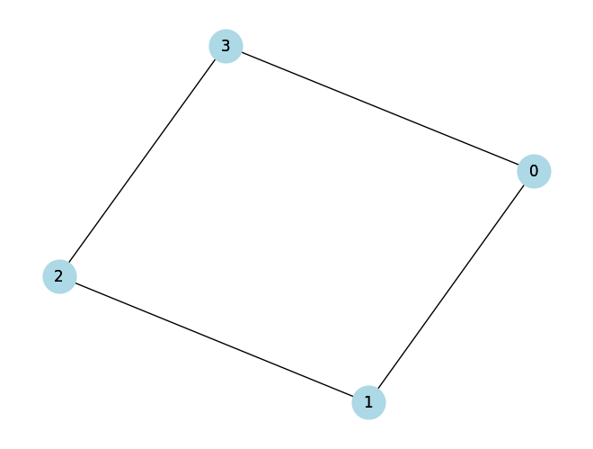
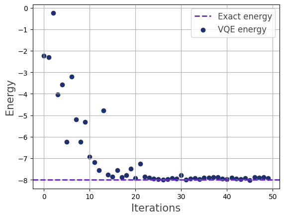

VQE Heisenberg model#
We proivde an implementation of the Variational Quantum Eigensolver for Heisenberg models following Bosse and Montanaro and Kattemölle and van Wezel.
Heisenberg problem#
- heisenberg_problem(G, J, B, ansatz_type='per hamiltonian')[source]#
Creates a VQE problem instance for an isotropic Heisenberg model defined by a graph \(G=(V,E)\), the coupling constant \(J>0\) (antiferromagnetic), and the magnetic field strength \(B\). The model Hamiltonian is given by:
\[H = J\sum\limits_{(i,j)\in E}(X_iX_j+Y_iY_j+Z_iZ_j)+B\sum\limits_{i\in V}Z_i\]Each Hamiltonian \(H_{i,j}=X_iX_j+Y_iY_j+Z_iZ_j\) has three eigenvectors for eigenvalue \(+1\) (triplet states):
\(\ket{00}\)
\(\ket{11}\)
\(\frac{1}{\sqrt{2}}\left(\ket{10}+\ket{01}\right)\)
and one eigenvector for eigenvalue \(-3\) (singlet state):
\(\frac{1}{\sqrt{2}}\left(\ket{10}-\ket{01}\right)\)
For the problem specific VQE ansatz, we choose a Hamiltonian Variational Ansatz as proposed here. This ansatz is inspired by the adiabatic theorem of quantum mechanics: A system is prepared in the ground state of an initial Hamiltonian \(H_0\) and then slowly evolved under a time-dependet Hamiltoniam \(H(t)\). Here, we set
\[H(t) = \left(1-\frac{t}{T}\right)H_0 + \frac{t}{T}H\]where
\[H_0 = \sum\limits_{(i,j)\in M}(X_iX_j+Y_iY_j+Z_iZ_j)\]for a maximal matching \(M\subset E\) of the graph \(G\).
For \(J>0\) the ground state of the initial Hamiltonian \(H_0\) is given by a tensor product of singlet states corresponding to the maximal matching \(M\).
The time evolution of \(H(t)\) is approximately implemented by trotterization, i.e., alternatingly applying \(e^{-iH_0\Delta t}\) and \(e^{-iH\Delta t}\), and if necessary trotterizing \(e^{-iH\Delta t}\).
In the scope of VQE, the short evolution times \(\Delta t\) are replaced by parameters \(\theta_i\) which are then optimized. This yields the following unitary ansatz with \(p\) layers:
\[U(\theta) = \prod_{l=1}^{p}e^{-i\theta_{l,0}H_0}e^{-i\theta_{l,1}H}\]The unitary \(e^{-i\theta H}\) trotterized by:
\[U_H(\theta) = e^{-i\theta H_B}\prod\limits_{k=1}^{q}\prod_{(i,j)\in E_k}e^{-i\theta H_{ij}}\]where \(E_1,\dotsc,E_q\) is an edge coloring of the graph \(G\), and \(H_B\) is the magnetic field Hamiltonian. Then all unitaries \(e^{-i\theta H_{ij}}\) for \((i,j)\in E_k\) commute. For implementing such unitaries, note that each two-qubit Heisenberg interaction unitary
\[\begin{split}\text{Heis}(\theta) \equiv e^{-i\theta/4}e^{-i\theta H_{ij}} = \begin{pmatrix} e^{-i\theta/2}&0&0&0\\ 0&\cos(\theta/2)&-i\sin(\theta/2)&0\\ 0&-i\sin(\theta/2)&\cos(\theta/2)&0\\ 0&0&0&e^{-i\theta/2} \end{pmatrix}\end{split}\]becomes diagonal in Bell basis, i.e., \(e^{-i\theta/2}\text{diag}(1,1,1,e^{i\theta})\).
This ansatz can be further generalized by introducing parameters
per edge color (one parameter for each color)
per edge (one parameter for each edge)
in the unitary \(U_H(\theta)\).
- Parameters:
- Gnx.Graph
The graph defining the lattice.
- Jfloat
The positive coupling constant.
- Bfloat
fhe magnetic field strength.
- ansatz_typestring, optional
Specifies the Hamiltonian Variational Ansatz. Available are
per hamiltonian,per edge color,per edge. The default isper hamiltonian.
- Returns:
- VQEProblem
VQE problem instance for a specific isotropic Heisenberg model.
Examples
import networkx as nx import matplotlib.pyplot as plt # Create a graph G = nx.Graph() G.add_edges_from([(0,1),(1,2),(2,3),(0,3)]) # Draw the graph with labels pos = nx.spring_layout(G) nx.draw(G, pos, with_labels=True, node_size=700, node_color='lightblue') nx.draw_networkx_labels(G, pos) plt.show()

from qrisp import QuantumVariable from qrisp.vqe.problems.heisenberg import * vqe = heisenberg_problem(G,1,1) vqe.set_callback() energy = vqe.run(QuantumVariable(G.number_of_nodes()),depth=2,max_iter=50) print(energy) # Yields -8.0
We visualize the optimization process:
>>> vqe.visualize_energy(exact=True)

{kind=link}
{kind=link}
Hamiltonian#
- create_heisenberg_hamiltonian(G, J, B)[source]#
This method creates the Hamiltonian for the Heisenberg model.
- Parameters:
- Gnx.Graph
The graph defining the lattice.
- Jfloat
The positive coupling constant.
- Bfloat
The magnetic field strength.
- Returns:
- HQubitOperator
The quantum Hamiltonian.
Ansatz#
- create_heisenberg_ansatz(G, J, B, M, C, ansatz_type='per hamiltonian')[source]#
This method creates a function for applying one layer of the ansatz.
- Parameters:
- Gnx.Graph
The graph defining the lattice.
- Jfloat
The positive coupling constant.
- Bfloat
The magnetic field strength.
- Mlist
A list of edges corresponding to a maximal matching of
G.- Clist
An edge coloring of the graph
Ggiven by a list of lists of edges.- ansatz_typestring, optional
Specifies the Hamiltonian Variational Ansatz. Available are
per hamiltonian,per edge color,per edge. The default isper hamiltonian.
- Returns:
- ansatzfunction
A function that can be applied to a QuantumVariable and a list of parameters.
- create_heisenberg_init_function(M)[source]#
Creates the function that, when applied to a QuantumVariable, initializes a tensor product of singlet sates corresponding to a given matching.
- Parameters:
- Mlist
A list of edges corresponding to a maximal matching of
G.
- Returns:
- init_functionfunction
A function that can be applied to a QuantumVariable.